The Software-Defined Guitar
Studio-grade tone. Zero setup friction. Acoustic-like freedom.
The Death of
Setup Friction
If you're like 64% of guitarists, you practice unplugged because the 10-minute setup time of wrestling with pedalboards, power supplies, and audio interfaces kills your motivation for a 15 minute practice session. We fixed that. CORE embeds a massive 480MHz studio-grade supercomputer directly into your pickguard. Just pick up your guitar, plug in your headphones, and your stadium rig is instantly in your ears. No amps. No dongles. Just play.
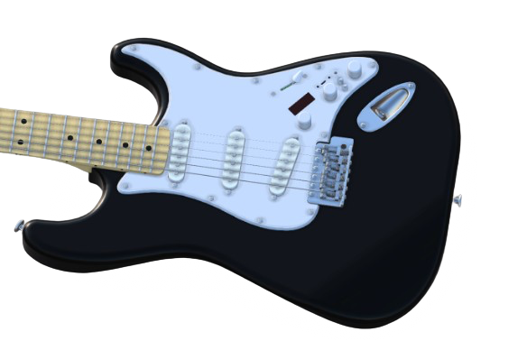
Solderless Drop-In
Wireless Control
Upgrading your Stratocaster shouldn't require a soldering iron. Our drop-in hub uses mechanical screw-terminals to securely integrate your existing analog pickups. Once installed, route your entire signal chain via Bluetooth Low Energy (BLE) with sub-12ms latency using our Web App. Save the exact preset to the guitar's onboard memory, and leave the screen behind.
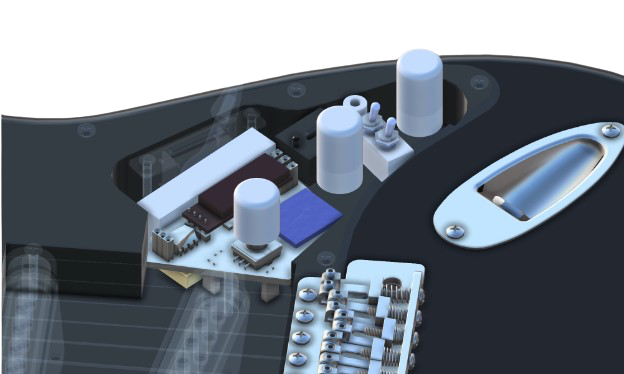
The Engineering Journey
The Absolute Beginning
Every hardware startup begins with a tangle of jumper wires. The very first step was powering up the Daisy Seed microcomputer and proving we could process basic audio signals through a raw circuit.

The Physical Constraints
The engineering challenge became immediately clear: compress a massive digital architecture into the strict 18.5mm depth limit of a standard Stratocaster routing cavity, entirely replacing the bulky analog wiring.
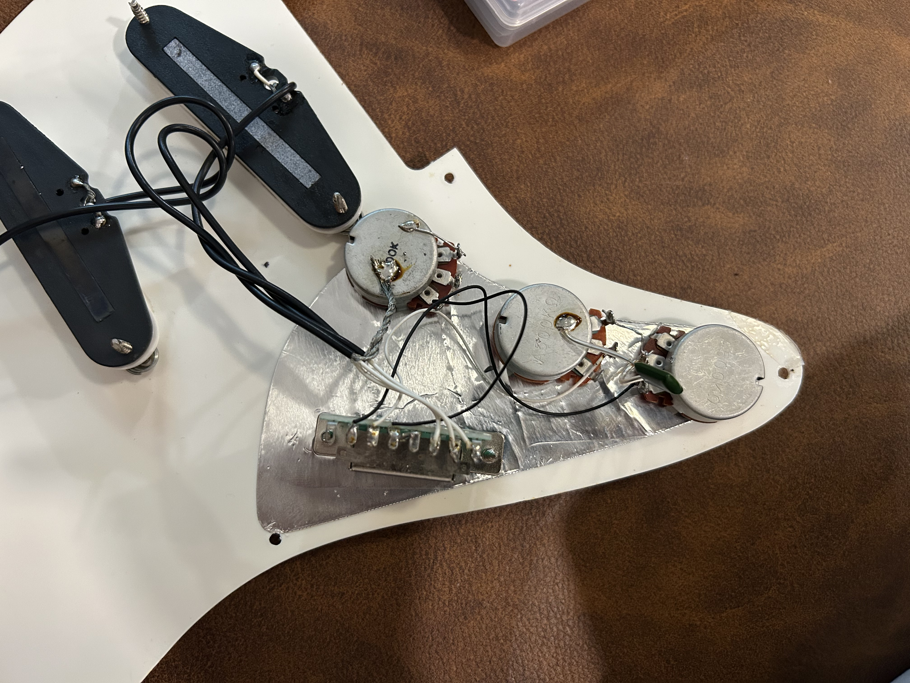
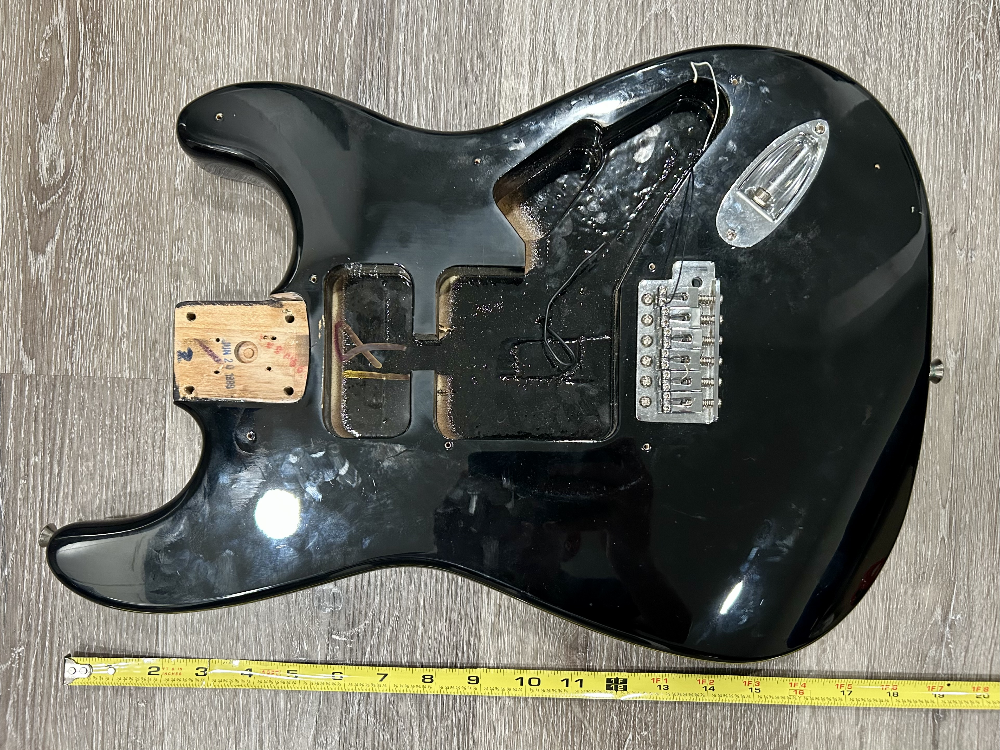
Cardboard Aided Design (CAD)
To ensure our digital components would clear the physical wood constraints before manufacturing, we utilized paper templates and cardboard mockups to reverse-engineer the exact geometry and optimize component placement.
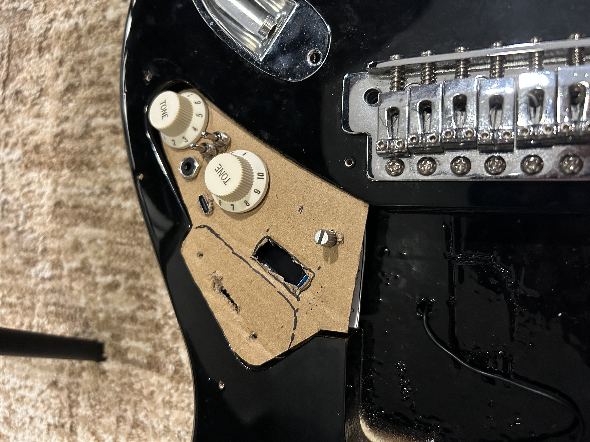
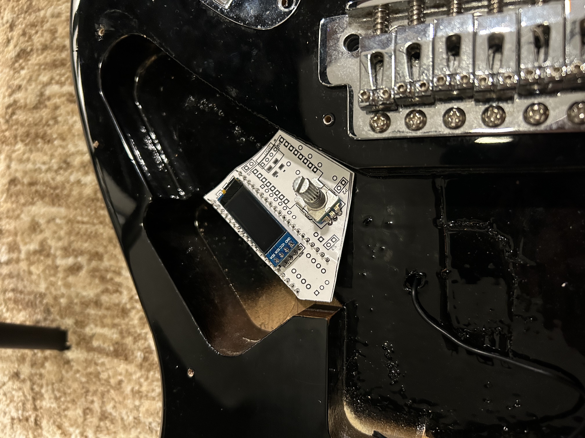
Software Meets Hardware
With the basic circuit alive, we began writing the custom C++ DSP algorithms. This phase validated the core 480MHz architecture, successfully pushing zero-latency audio and driving the OLED interface directly from VS Code.
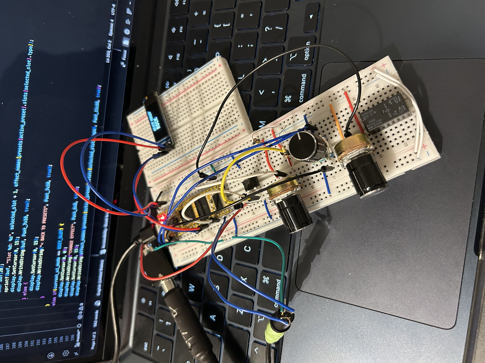
The Breadboard Jungle
Before miniaturization, we had to prove the entire system worked together. This meant networking the DSP, the ESP32 Bluetooth module, power management, and analog controls into one massive, complex breadboard circuit.
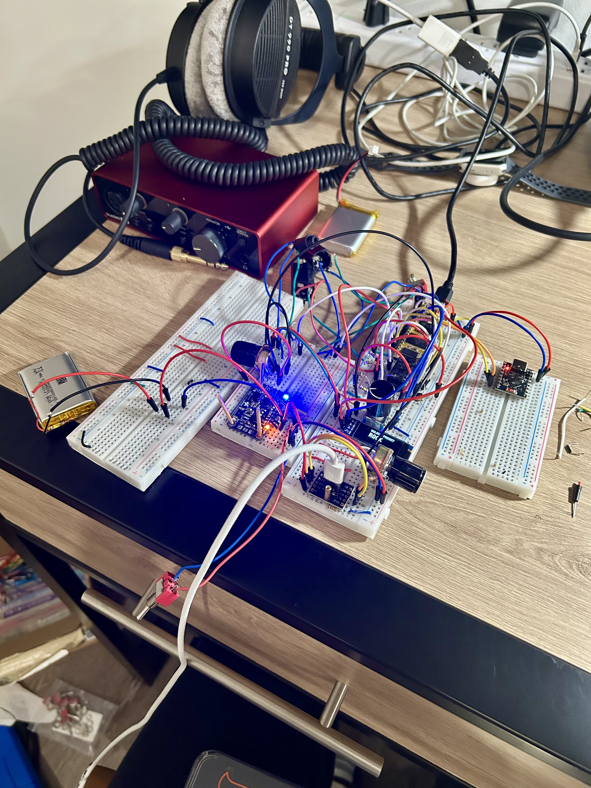
Custom PCB Engineering
To completely miniaturize the hardware footprint, we engineered a custom double-sided printed circuit board. By migrating to Surface Mount Devices (SMD), we condensed a table full of wires into a single, clean motherboard.

Integration & Stabilization
Transitioning to a sealed pickguard introduced complex Electromagnetic Interference (EMI) challenges. We routed the incredibly tight wiring, integrated a mechanical relay failsafe, and unified the hardware into a single drop-in smart cartridge.
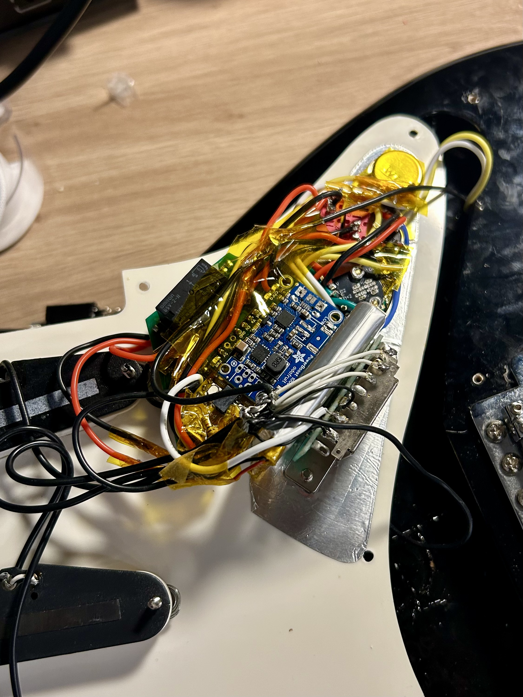
The Silent Studio, Realized
With a fully functional prototype and a Provisional Patent filed with the USPTO, Project CORE brings grab-and-go freedom to the electric guitar. Real-time effects routing via Web Bluetooth, sub-15ms latency, and zero noise complaints.
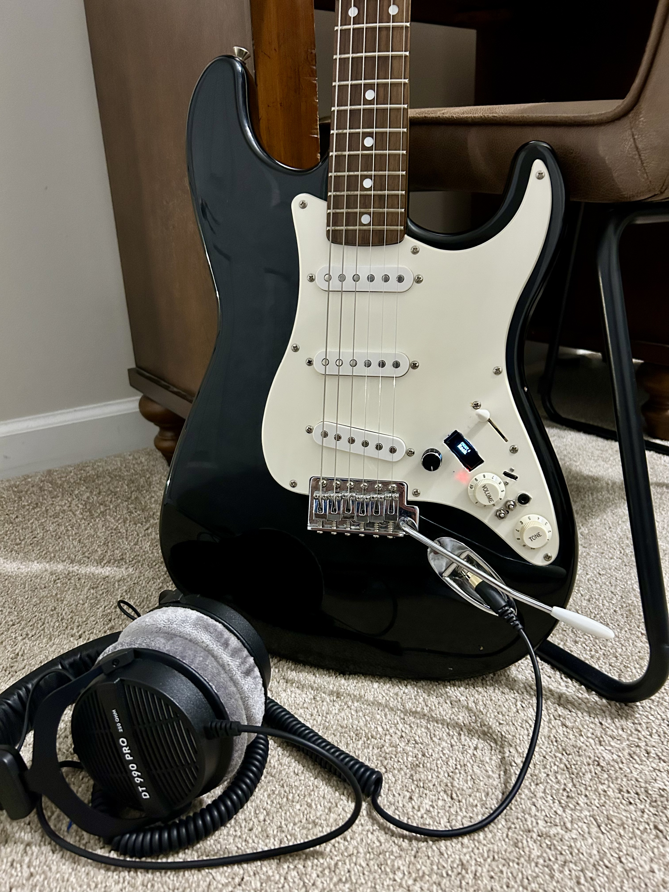
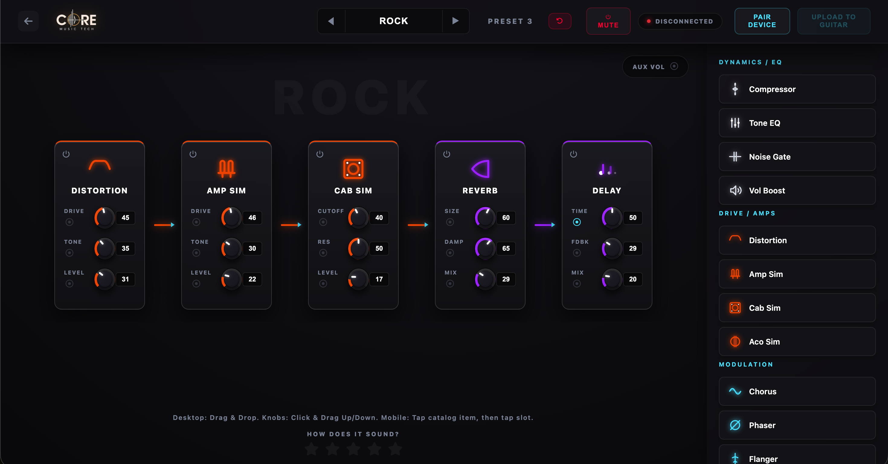
Under the Hood
Interact with the mechanical layout of the CORE MVP. We managed to fit an ARM Cortex-M7, a mechanical true-bypass relay, and a rechargeable power array into a standard cavity without routing a single millimeter of wood.
Join the Priority Waitlist
We are preparing for our Phase 1 hardware manufacturing run. We need 10-15 dedicated beta testers to help validate our DSP algorithms before public launch. Drop your email in the survey to get on the shortlist.
Take the 60-Second Survey